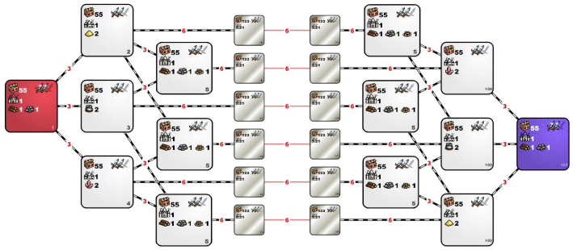

mt_Andromeda 2.2

mt_Andromeda 2.2 is template created by wnukos for purpose of restoring the mt_Andromeda template, which at this point was played only in Heroes League (it's very conservative tournament).
Diffrences from 2.1 version is that there are no AI players. There are same spells bans as in TP versions so there is max 3 rolls for Town Portal and max 4 rolls for Dimension Doors in Rampart, Inferno and Necropolis, 5 in Tower and Dungeon and 6 in Conflux.
Changes compared to mt_Andromeda:
-
Banned spells: Sorrow, Slayer, Fire Shield, Inferno, Counterstrike, Magic Mirror, Sacrifice
-
Banned heroes: Ciele, Luna, Grindan, Labetha, Alamar, Jeddite, Deemer, Gunnar, Kyrre, Dessa, Solmyr, Aislinn, Thant, Vidomina, Leena, Miriam, Korbac,
-
Enabled heroes: Mutare, Mutare Drake, Boragus, Roland, Catherine, Haart Lich.
-
All computer zones was changed to neutral zones. They are same, but don't have AI.